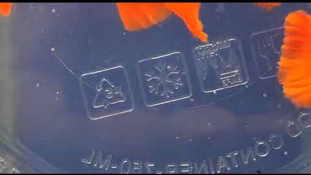
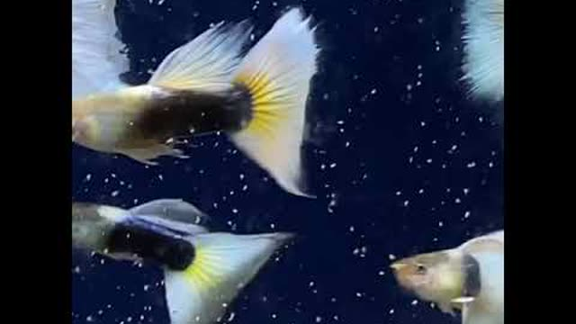
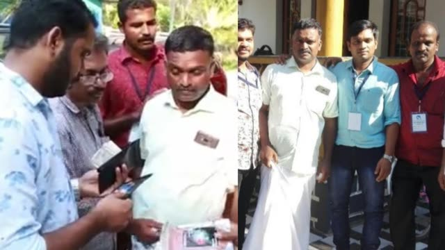
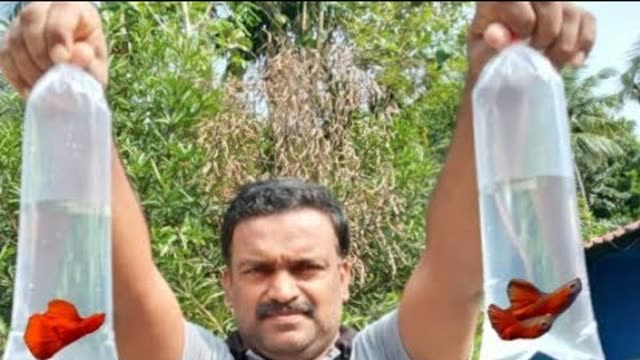
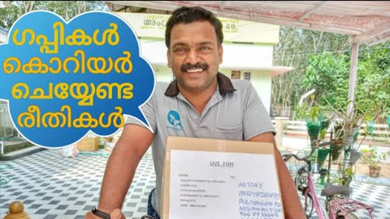
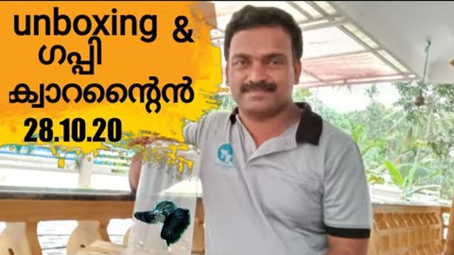
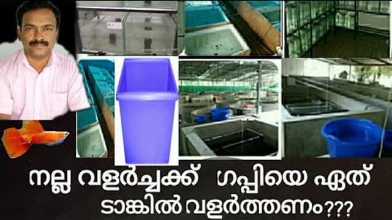
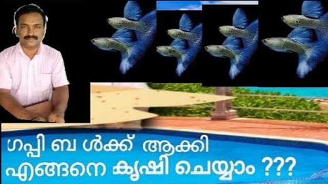
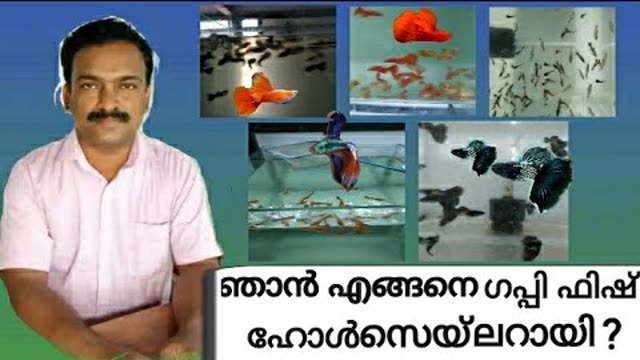

Super Full Red
Deep, even red across body and tail with no black wash. Bred for colour density and tail spread generation after generation.
Farm photoQuality Guppies · Kerala, India
We are a guppy farm and wholesaler in Kerala. Full Red, Yellow Taxi, Koi, Moscow, Albino, Dumbo Ear — bred in our own tanks, culled for quality, quarantined before dispatch and packed to travel. Retail pairs, breeder trios and bulk supply for shops and farmers.
About the farm
Quality Ornamental Fish Farm started with a few pairs and grew into a full breeding and wholesale unit. We keep our own line-bred stock, raise the fry ourselves and cull hard — which is why our fish hold their colour and finnage instead of fading a generation later.
We also spend a lot of time teaching. Our YouTube channel walks Kerala's guppy farmers through tanks, feed, costs, packing, courier and marketing — in Malayalam, from experience rather than theory.
Our guppies
Availability changes with the breeding cycle. Email us for today's list, sizes and pair or bulk rates.

Deep, even red across body and tail with no black wash. Bred for colour density and tail spread generation after generation.
Farm photo
Clean lemon-yellow caudal on a bright body — one of the fastest-moving strains with retail buyers and shops alike.
Farm photoThe albino version of our flagship red — softer body tone, ruby eyes, and always in demand from breeders.
Breeder favouriteFine blue speckling across a broad tail. Looks its best in a planted tank under a white light.
Show tailHeavy, solid metallic colour from nose to tail. Big-bodied males that stand out in any display tank.
Solid colourWhite head, red rear half — the koi look that sells itself. Available as pairs and as breeding trios.
Pairs & triosCooler-toned koi patterning with galaxy spotting on the body. A steady seller alongside the reds.
PopularPatterned bodies and mosaic tails — the classic fancy guppy look that most hobbyists start with.
Community tanksOversized pectoral fins that flare as they swim. Slower growers, so we hold them back until they are properly finished.
Grown outBlack rear half with a clean contrasting front. Sharp fish that photograph beautifully against light gravel.
High contrastPale, metallic strains that light up under LED. Kept in separate tanks to keep the lines clean.
Line kept pureReds with patterned bodies rather than solid colour — a good second strain if you already keep Full Reds.
Limited stockTwo of the cards above use real photos from our own videos. The rest use placeholder colour panels until farm photos are added — see the README for how to drop them in.
From our YouTube channel
Tanks, feed, costs, packing, courier, marketing and subsidies — everything we have learned running the farm, shared for free.

A look at our signature Full Red line.

Our Yellow Taxi strain in the breeding tank.

Guppy farmers and customers at the farm.

Packing guppies without an oxygen cylinder.

What to watch for when couriering guppies.

Unboxing new arrivals and quarantining them.

Which tank grows guppies out fastest.

Scaling guppy breeding up to bulk.

How the farm grew into a wholesale business.
Why buy from us
Only the best males and females go back to the breeding tanks, so strains hold their standard instead of drifting.
Every batch is watched and treated in isolation before it is offered for sale.
Conditioned, starved and double-bagged the right way — we made a whole video on it.
Regular parcels out of Kerala, with tracking shared the moment your box is booked.
Bulk rates and repeat schedules for aquarium shops and guppy farmers.
Send us a photo any time — we help with feeding, water and sick fish, in Malayalam or English.
Care tips
The advice we give every customer before a box leaves the farm.
Float the sealed bag for 20 minutes, then add your tank water a little at a time over another 20. Never pour the transport water into your tank.
Two or three small feeds a day beat one big one. Anything not eaten in two minutes is fouling the water.
A quarter of the water each week, dechlorinated and at the same temperature. Guppies forgive most things except old water.
Too many males and the females get harassed and stop growing. Give fry a separate tank or plenty of plant cover.
A week in a separate tank before joining an established one. It costs you a bucket and saves the whole tank.
Get in touch
Tell us which strain you are after and whether it is a pair, a trio or bulk — we will send photos and video of what is ready right now. Email is the fastest way to reach us.
Fill this in and it opens your email app with your message ready to send.